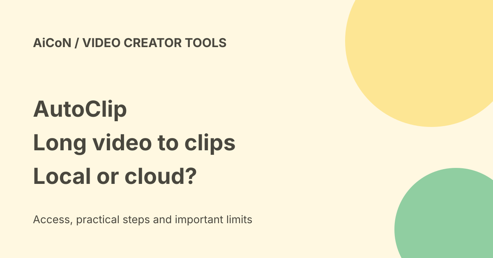

AutoClip: local video clips, model costs and privacy controls
AutoClip is a free MIT-licensed video-clipping project. It analyses longer videos and helps export shorter clips. Editing and rendering happen on your computer, but your model choices, analytics and publishing settings decide what leaves it.

What it does
AutoClip imports your local video or a supported YouTube/Bilibili link, obtains subtitles or transcribes speech, analyses possible segments, cuts clips and prepares titles and export files. Its current README links version 1.5.0. You can review cuts in its editor rather than trusting an automatic result.
Interview, podcast, lesson and spoken-video examples are its main documented use cases. Accurate timed subtitles reduce transcription work. Optional visual analysis can help with material such as game recordings, but it needs a suitable model and explicit enablement. Clip counts, timing and quality depend on the material and settings. The developer's sample timings are not a speed guarantee for your computer.
Platforms and installation limits
The desktop download routes are macOS Apple Silicon and Windows 10/11 x64. Intel Mac and Linux users are directed to Docker or CLI. Desktop bundles include Python and FFmpeg, but local language models and transcription components still need setup. Large files need space for originals, model downloads, temporary files and exports.
Get the actual installer from the official release page, not its Source code archive. The installation guide still warns about unnotarised Mac builds and unsigned Windows versions. Check the notes for your selected release. Do not turn off system protection broadly. We did not install or verify package signatures, Windows operation or Apple Silicon output.
Free software is not free cloud AI
The project is MIT-licensed and the software is free. Cloud analysis, speech transcription and AI image generation are billed by your chosen service. You supply its credentials and must check its terms and prices. The project's sample yuan costs describe specific developer runs, not an India tariff or fixed price per video.
Ollama and LM Studio local-model routes do not require a cloud-model key, but they need suitable hardware. Whisper or SenseVoice can provide local speech transcription. First model downloads, link imports, updates and optional publishing still need internet. After setup, a local video with local transcription and analysis can avoid those cloud AI calls; that does not automatically turn off all application networking.
What can leave your computer?
Check the vision switch before importing. The installation/privacy docs describe explicit enablement, but the 1.5.0 release notes say visual recognition starts on during first model setup. These sources disagree about the default. Inspect the current settings and turn off cloud vision if you do not want sampled frames sent or extra model charges. Do not assume it begins disabled.
- Cloud text analysis receives relevant subtitles or copy.
- Cloud transcription receives audio.
- Explicitly enabled cloud vision receives sampled frames and required text.
- A selected publishing action uploads the finished video to a connected platform.
The project's privacy document says original media, project files and configured keys are stored locally and are not sent to the maintainer's server. That statement does not cover data you choose to send directly to a cloud provider.
Statistics, crash reports and public feedback
Anonymous PostHog usage statistics are currently enabled. Optional Sentry crash reporting is on by default when the build has a reporting address. The policy says neither includes video content, subtitles or keys, but they can include technical events and error information. It describes US-region storage, default retention of no more than 12 months for statistics and 90 days for crash reports. These are project policy statements, not an independent audit.
Open Settings, then App, and separately switch off anonymous statistics and crash reports if you do not want them. The document says the choice persists after restart. Requests already sent cannot be recalled. Turning off statistics does not disable manual feedback.
Feedback you actively submit can become a public GitHub Issue or Discussion, including your text and selected diagnostic details. Do not put private project names, personal data or secrets in that box. The policy also contains unresolved legal-review notes; do not treat it as proof that every privacy or cross-border compliance question is settled.
A cautious first project
- Read the release and installation notes for your exact platform.
- Use a short video you own, with clear speech and accurate subtitles if available.
- Review privacy switches before processing.
- Choose local or cloud analysis and transcription deliberately. Check cloud rates and what each route sends.
- Generate a small trial, then watch every clip. Check context, subtitles, crop, names and title accuracy.
- Export locally first. Connect a publishing account only when you intend to upload.
India and copyright
We saw no India-specific restriction in the checked project docs. We did not test regional downloads, Malayalam transcription or model access from India. Use only material you own, have permission to use, or are legally allowed to process. An import button does not grant reuse rights or override a platform's rules.
Frequently asked questions
Is it completely offline?
Only selected local routes after setup avoid cloud AI. Disable telemetry separately and avoid link imports or publishing if you want an offline workflow.
Does it promise a fixed number of good clips?
No. Review the actual output.
Do I need a cloud API key?
Not for the documented local-model route. Cloud routes need your provider access and may cost money.
What changed since the earlier post?
The archive referred to 1.3.0. This guide uses the current 1.5.0 release and adds CLI/Docker alternatives, cloud audio and image sharing, default-on statistics/crash reports and public feedback. It drops the old star count and keeps platform, signing and copyright cautions.
Sources: Official repository · Version 1.5.0 release · Installation guide · Privacy documentation. Checked 8 October 2026.